Install Gale
Download
Gale_Setup_0.5.0.exefrom the download page and open it.Windows asks whether to allow the app to make changes. Click Yes. If SmartScreen says "Windows protected your PC", click More info, then Run anyway; the installer isn't code-signed yet.
The setup installs Gale to
C:\Program Files\Gale, adds it to the Start menu and desktop, and opens it. It takes under a minute.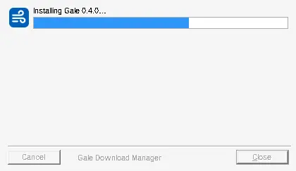
The setup shows its progress and closes by itself when Gale is installed.
Already have Gale? Run the new setup. It closes Gale, updates it in place and keeps your downloads list and settings.
Your first download
When you open Gale for the first time the list is empty. The buttons at the top add downloads; the sidebar filters them by status and category.
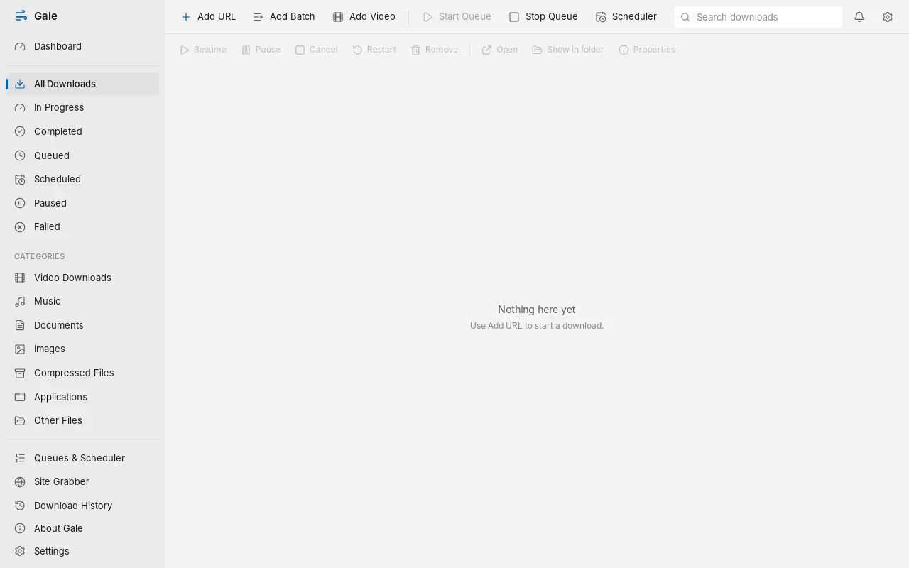
Copy the address of a file, click Add URL (or press Ctrl + N) and paste it into Address. Quicker: press Ctrl + V anywhere in Gale's window, or drag a link from your browser onto Gale, and the dialog opens with the link filled in. Several links at once open Add Batch.
Check the folder under Save to. Leave File name empty to use the name the server gives. Eight connections is a good default.
If the site publishes a SHA-256 checksum, paste it in. Gale then marks the file complete only if it matches.
Click Start download, or Add paused to start it later.
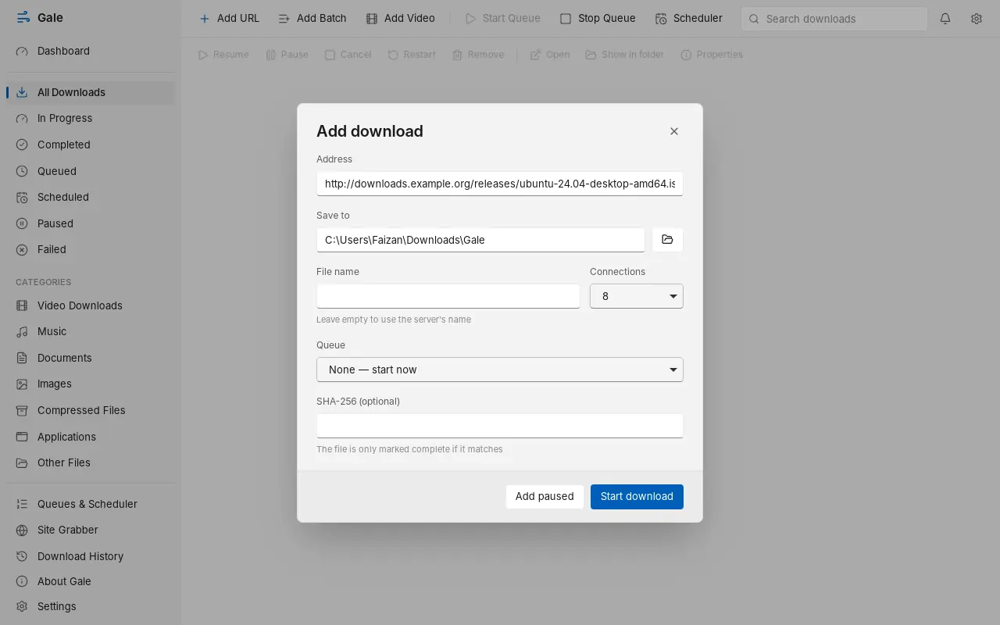
The Add download dialog.
Connect your browser
The extension sends downloads, links and videos from Chrome or Edge to Gale. It comes with Gale; you only switch it on once.
Open the Start menu, open the Gale folder and click Install browser extension. The page that opens shows the extension's folder and a Copy button. The folder is
C:\Program Files\Gale\browser-extension.In Chrome go to
chrome://extensions(in Edge,edge://extensions) and turn on Developer mode.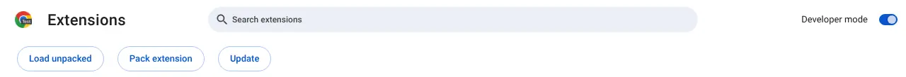
Developer mode is the switch at the top right. Load unpacked appears below the search box. Click Load unpacked and choose the
browser-extensionfolder. Gale Download Manager appears in the list.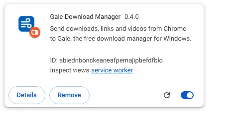
The extension after loading. Click the puzzle-piece icon in the toolbar and pin Gale. Click the Gale icon: it should say Connected while Gale is running.
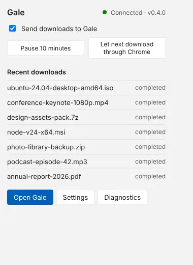
The toolbar popup shows the connection, recent downloads, and quick switches.
Keep the folder where it is. The browser loads the extension from it, and Gale updates it when you install a new version.
Downloads from the browser
With the extension connected, click a download link as usual. Instead of Chrome's download bar you get Gale's Download File Info window.
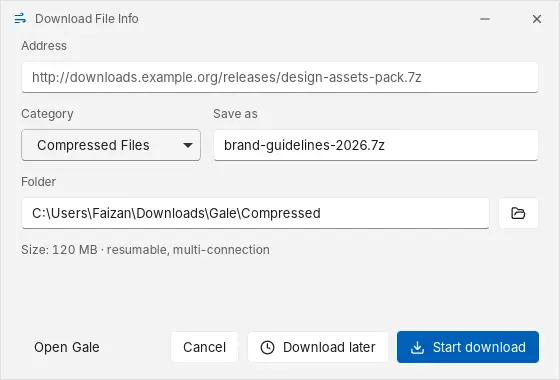
- Start download begins at once and opens the progress window.
- Download later adds it to your main queue.
- Cancel drops it. Nothing is downloaded.
- Changing Category moves the file to that category's folder when "Sort downloads into category folders" is on.
Right-click for more: on a link, Download with Gale, Add to Gale queue or Copy download URL; on selected text, Download selected links with Gale; on the page, Download all links on this page with Gale or Download video on this page with Gale.
To choose which downloads Gale takes over, open the extension's options (right-click the Gale icon, then Options). You can limit it to certain file types or sizes, exclude sites, or turn off the Download File Info window so downloads start straight away.
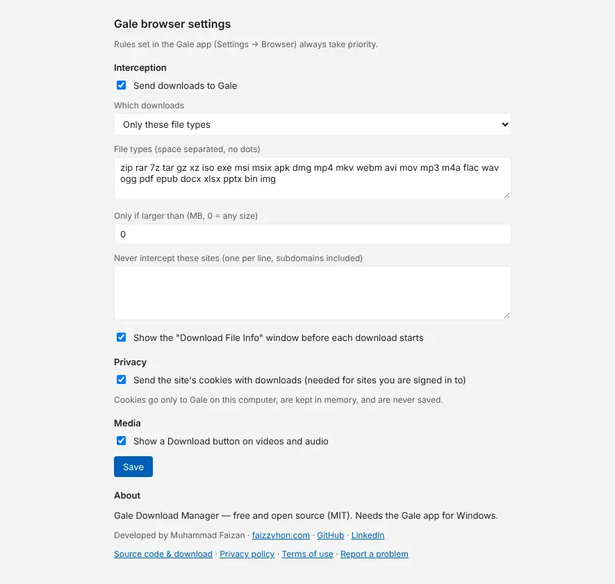
The progress window
Each download gets its own small window. It shows the percentage, speed, time left and how many connections are working.
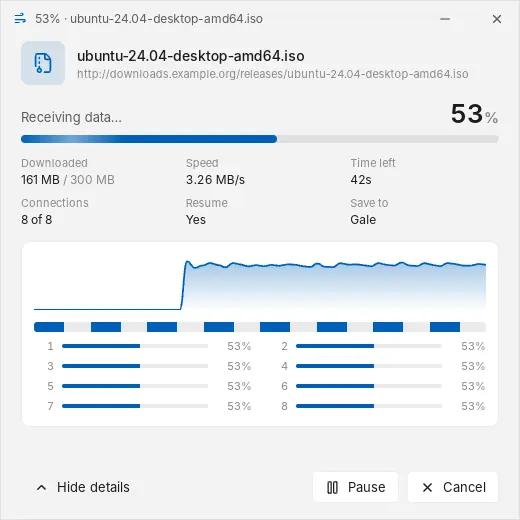
- Pause stops the download and keeps what's done. Resume continues from there, even days later.
- Cancel stops it and deletes the unfinished part. Finished files are never deleted.
- You can close the window; the download keeps going in the main window.
When the download finishes, the window shows where the file was saved.
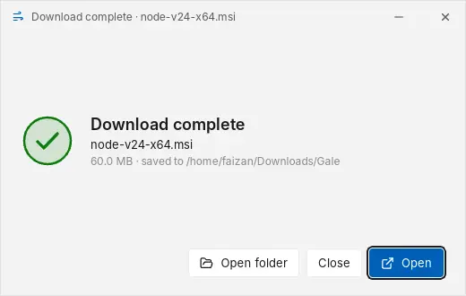
Don't want these windows? Turn off "Show a progress window when a download starts" in Settings → General. You can also have them close automatically when a download finishes.
Download videos
There are two ways to save a video.
From the web page
Hover over a video. A blue Download ▾ button appears at its top right.
Click it. Gale reads the video and lists the qualities with their estimated size: 1080p, 720p, 360p, and audio only as MP3 or in its original format.
Click a quality. The download starts at once and its progress window opens; there's nothing to confirm in Gale.
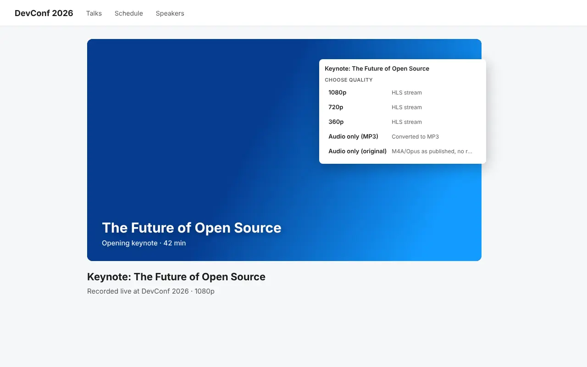
The quality menu on a web page. Gale needs to be running; it starts in the tray with Windows.
Plain video files (an .mp4 link, for example) show a single Download row instead. If Gale can't read a page, the menu offers Open in Gale so you can try in the app.
From Gale
Copy the address of the video page and click Add Video.
Paste it and click Get formats. Gale reads the page and lists the qualities.
Pick a quality, or audio only as MP3 or in its original format, check the folder and click Download.
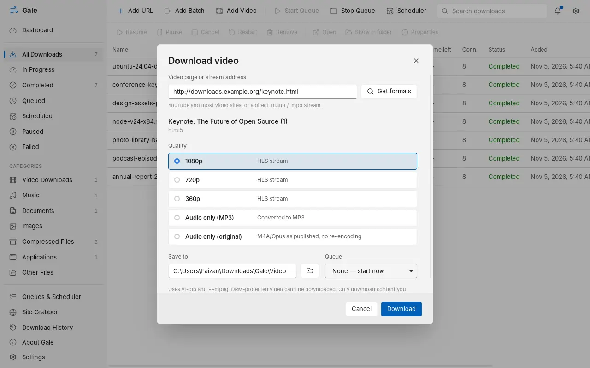
Gale downloads the video and sound separately and joins them into one file without re-encoding.
Video downloads show their stage in the list: reading video info, downloading, merging, then verifying.
Only download videos you have the right to save. DRM-protected video (most paid streaming services) cannot be downloaded, and Gale doesn't try.
Download torrents
Gale downloads magnet links and .torrent files with BitTorrent, next to your other downloads.
In the browser, click a magnet link or a .torrent link. The extension sends it to Gale, which asks where to save it. When Gale isn't running, the link opens the way it normally would.
In Gale, click Add URL and paste a magnet link, or click .torrent file… to pick a file on your PC.
Gale first gets the torrent's details from other peers (for magnet links), then downloads. The list shows how many peers are connected. A torrent with several files gets its own folder.
Pause and resume work like any other download, also after a restart: Gale checks the pieces already on disk and fetches only what's missing. Gale shares pieces with other peers while it downloads, which is how BitTorrent works, and stops sharing when the download finishes or is paused. The speed limit applies to torrents too.
Turn off Open magnet links and .torrent files in Gale in the extension's options to keep using another torrent app from the browser.
Only download torrents you have the right to. Sharing copyrighted files without permission is illegal in most countries, and peers can see your IP address.
Manage downloads
The main list shows every download with its progress, size, speed, time left and status. Use the sidebar to see only what's in progress, finished, queued or failed, or one category such as Music or Compressed Files. The search box filters by name.
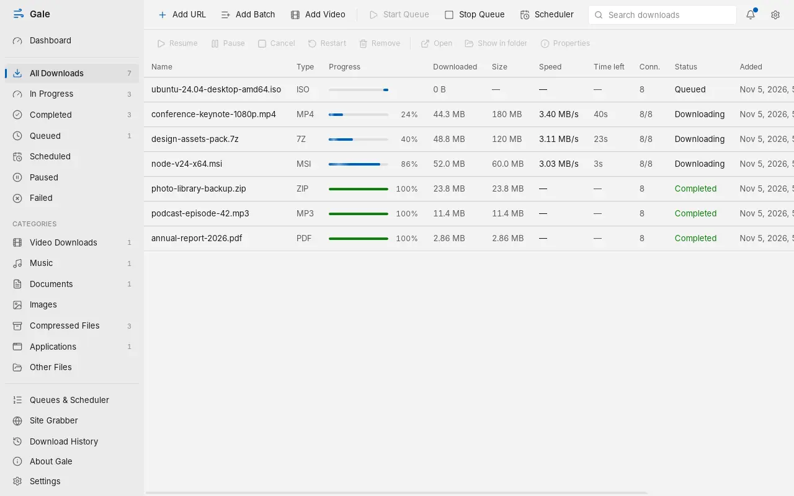
Select a download to use the toolbar above the list, or right-click it for everything you can do with it.
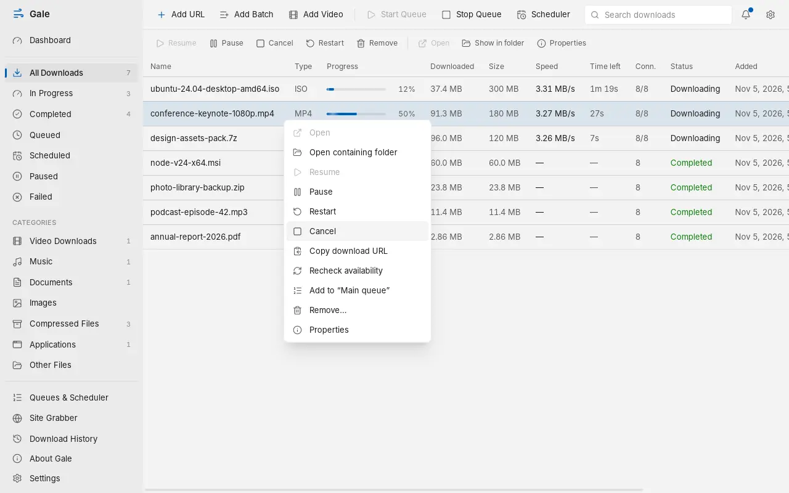
- Recheck availability asks the server whether the file still exists and can resume.
- Remove takes it off the list. Gale asks before deleting a downloaded file, and only deletes it if you tick that box.
- Properties shows the address, size, checksum and a map of which parts are done.
The Dashboard sums up your downloads, and Download History keeps a record of what finished, failed or was cancelled, with how long each took.
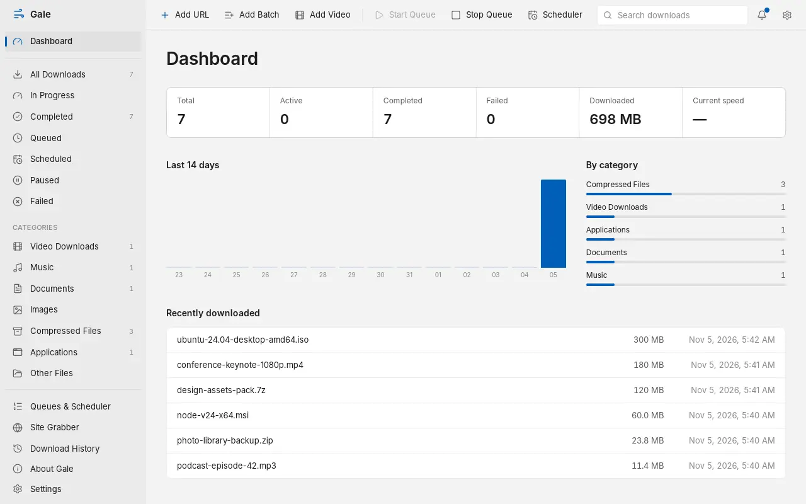
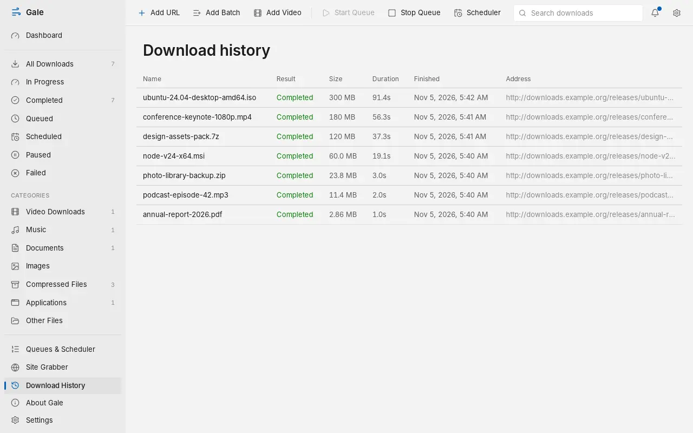
Queues and scheduler
A queue runs its downloads a few at a time instead of all at once. Gale starts with a Main queue; add more with New queue.
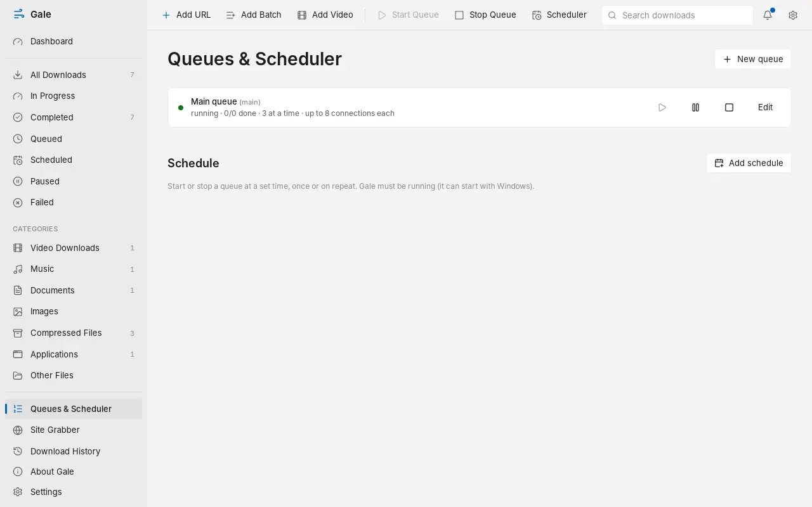
Add downloads to a queue: choose the queue in the Add download dialog, use Download later in the browser, or right-click a download and pick Add to a queue.
Click Edit on a queue to set how many downloads run at the same time and how many connections they may use.
Click Add schedule to start or stop a queue at a set time: once, every day, on weekdays or weekly. You can also have Gale shut down the PC when the queue finishes; a 60-second countdown lets you cancel.
Need the bandwidth back for a while? Right-click Gale's tray icon and choose Speed limit: Unlimited, 256 KB/s, 1 MB/s or 5 MB/s. It applies to running downloads at once. Other values can be set in Settings → Network.
Schedules need Gale running. It starts with Windows in the tray by default, so they run even if you never open the window.
Site grabber
The site grabber finds files linked from a web page, such as every PDF in a course page or every image in a gallery, and lets you choose which to download.
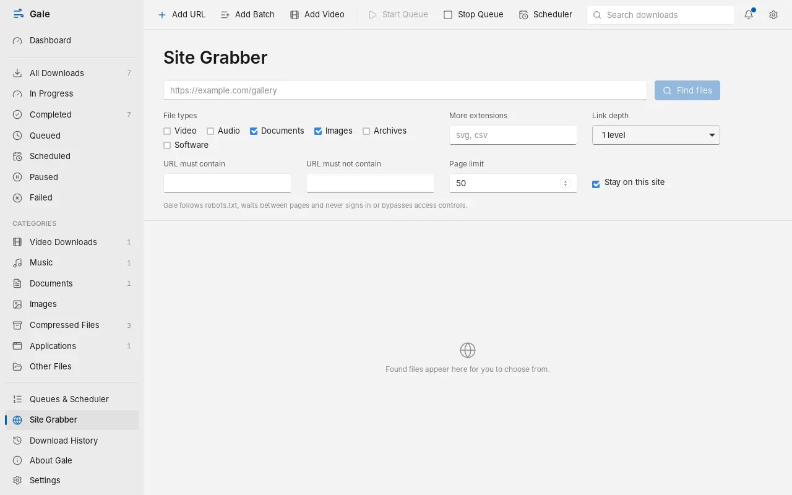
Paste the page address and tick the file types you want. Add other extensions under More extensions.
Keep Link depth at 1 to look only at that page, or raise it to follow links. URL must contain and must not contain narrow the results.
Click Find files, tick the files to keep and click Download.
The grabber respects each site's robots.txt, waits between pages, and never signs in or gets around access controls.
Settings
Open Settings from the bottom of the sidebar or the gear at the top right. Changes apply when you click Save.
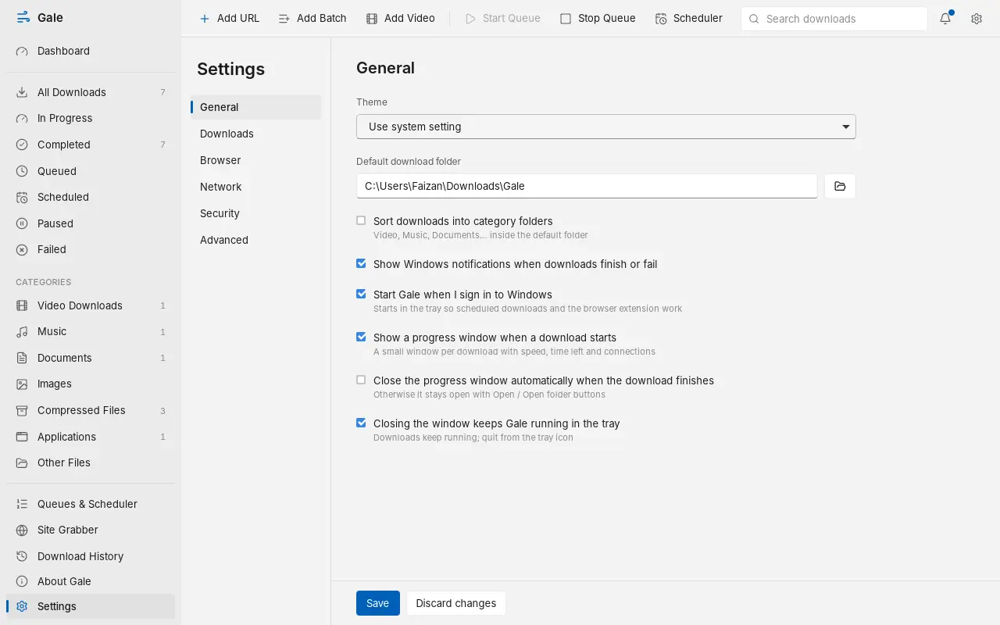
| Tab | What's there |
|---|---|
| General | Light or dark theme, default download folder, category folders, notifications, start with Windows, progress windows, keep running in the tray |
| Downloads | Connections per download (1 to 32), how many downloads run at once, automatic retries |
| Browser | Whether the extension is connected, sites and file types the browser should keep |
| Network | Proxy (HTTP, HTTPS or SOCKS5), timeouts, total and per-download speed limits, connections per server, a connection test |
| Security | Blocked file types, scanning finished downloads with Microsoft Defender |
| Advanced | Video tools and Update yt-dlp, database backup and restore, logs, reset |
Keyboard shortcuts
| Keys | Action |
|---|---|
| Ctrl + N | Add a download |
| Ctrl + V | Add the link you copied (several links open Add Batch) |
| Space | Pause or resume the selected download |
| Enter | Open the selected file when finished, otherwise show its properties |
| Delete | Remove the selected download (asks first) |
| Esc | Close a dialog |
Troubleshooting
The extension says "Gale is not installed"
Install Gale with the setup, then restart the browser. The installer registers the connection the extension needs.
The extension says Gale is not running
Start Gale from the Start menu. After that it sits in the tray (next to the clock). To have it ready every time, keep "Start Gale when I sign in to Windows" on in Settings → General.
"The Gale connection is owned by another program"
Two copies of Gale are installed or running. Quit Gale from its tray icon (or end every gale.exe in Task Manager), run the latest setup, and start Gale again. The message names both programs so you can see which one is in the way.
A video won't download
Video sites change often. Open Settings → Advanced and click Update yt-dlp, then try again. DRM-protected video can't be downloaded.
A download uses only one connection or starts over after a pause
Some servers don't allow downloading a file in parts. Gale detects this and uses a single connection; a paused download from such a server has to restart. There's nothing to fix on your side.
Downloads from the browser aren't going to Gale
Click the Gale toolbar icon and check that Send downloads to Gale is on and that it isn't paused. In the extension's options, check the file types, minimum size and excluded sites. Gale also leaves alone the sites and types listed in Settings → Browser.
Downloads are slower than expected
Check for speed limits in Settings → Network. Raising connections per download (Settings → Downloads) helps on fast lines; some servers limit connections, which Gale respects.
Where are my settings and download list?
In %APPDATA%\com.faizzyhon.gale. Back them up from Settings → Advanced.
Still stuck? Report the problem on GitHub with what you did and what Gale showed.
Update and uninstall
To update, download the latest setup and run it. Gale closes, updates in place and keeps your list and settings.
To uninstall, open Windows Settings → Apps → Installed apps, find Gale Download Manager and choose Uninstall. This removes the program, its Start menu entries, the browser connection and the start-with-Windows entry. Your downloaded files and your list in %APPDATA%\com.faizzyhon.gale are kept; delete that folder to remove everything. Remove the extension from chrome://extensions as well.